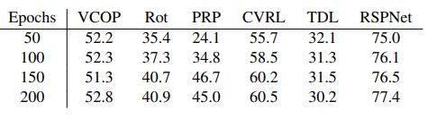

We first analyze the effects of pre-training data size variation. The network trains on four subsets of K400 dataset:
10,000 (10k), 30,000 (30k), 50,000 (50k) and 100,000 (100k). The number of videos per class are same. Smaller
pre-training dataset is a subset of bigger pre-training dataset size (i.e. 10k is a subset of 30k and so on).
We try to answer three questions regarding dependence on pre-train subset size:
- Behavior of different pretext tasks
- How various architecture backbone performs?
- Effect of training time for
different architectures and across different pretext tasks
Looking into different architectures in Figure 1, there's 6-7% improvement in performance with
increase in dataset size from 10k to 30k for all architectures. Increasing the subset size from 30k to 100k, shows minimal
effect on R21D and ShuffleNet, whereas VideoSwin still improves by 12.8%. Looking into the effect of duration of training across different architectures for different subsets, the performance gain is minimal (less than 1.5%) after
training for more than 100 epochs.

Table 2: Performance of different pretext tasks on R21D with 50k pre-training subset size
If we fix the subset size
to 50k, apart from PRP, the average gain in performance is
less than 2% for all other pretext tasks.